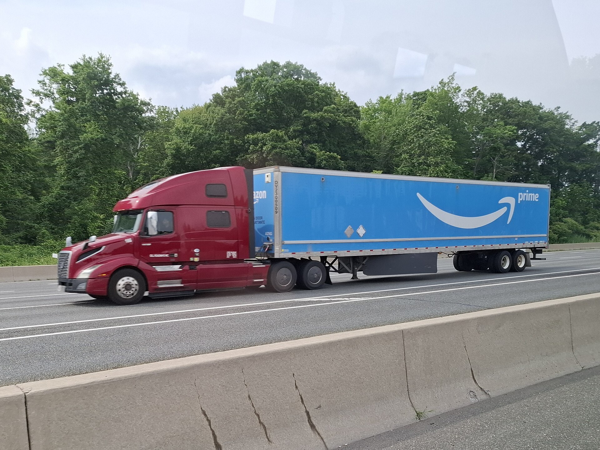

Транспортный коридор TRACECA (1993–1998): поиск независимым Узбекистаном путей к миру
TRACECA — «Транспортный коридор Европа–Кавказ–Азия» — программа, запущенная Евросоюзом на конференции в Брюсселе в мае 1993 года и направленная на развитие маршрута, связывающего Центральную Азию с Европой через Каспий, Кавказ и Чёрное море в обход территории России. Узбекистан был одним из восьми государств-основателей программы. 8 сентября 1998 года в Баку было подписано Основное многостороннее соглашение (MLA); документ приняли 12 государств, а постоянный секретариат разместился в Баку. В первые годы независимости это было частью политики Узбекистана по диверсификации транспортных маршрутов. История — только факты.

Независимый с 1991 года Узбекистан столкнулся с тяжёлой географической реальностью: страна не имеет выхода к морю и, что ещё тяжелее, её соседи тоже не имеют выхода к морю — то есть, чтобы достичь мировых рынков, нужно пересечь несколько границ. В таких условиях диверсификация транспортных маршрутов была национальной необходимостью. Частью этого поиска стала программа TRACECA. Ниже её история изложена только на фактах.
Что такое TRACECA
TRACECA расшифровывается как «Транспортный коридор Европа–Кавказ–Азия». Это международная программа, направленная на развитие транспортного маршрута, связывающего государства Центральной Азии с Европой через Каспийское море, Южный Кавказ и Чёрное море. Её ключевая идея — возродить древний Шёлковый путь в виде современных автомобильных, железнодорожных и морских связей и дать возможность перевозить грузы по альтернативному маршруту, не проходящему через территорию России.
1993 год: начало в Брюсселе
Программа TRACECA была запущена по инициативе Евросоюза на конференции, прошедшей в Брюсселе в мае 1993 года. В ней участвовали восемь государств-основателей — Армения, Азербайджан, Грузия, Казахстан, Киргизия, Таджикистан, Туркменистан и Узбекистан — вместе с Европейской комиссией. Сначала программа была сосредоточена на финансировании технической помощи и инфраструктурных проектов.

1998 год: Бакинское соглашение
Правовая основа программы была закреплена «Основным многосторонним соглашением о международном транспорте по развитию коридора Европа–Кавказ–Азия» (MLA), подписанным 8 сентября 1998 года в Баку, столице Азербайджана. На бакинском саммите документ подписали 12 государств. На основе этого соглашения постоянный секретариат программы был учреждён в Баку.
Состав расширился
В последующие годы к соглашению присоединились новые государства — в том числе Молдова, Румыния, Турция и Украина, а в 2009 году — Иран. Сегодня в Основном соглашении 14 государств-членов: Азербайджан, Армения, Грузия, Иран, Казахстан, Киргизия, Молдова, Румыния, Таджикистан, Туркменистан, Турция, Украина и Узбекистан. В рамках программы реализуются проекты по гармонизации автомобильных, железнодорожных, портовых и таможенных процедур.
Почему это было важно для независимого Узбекистана
В советское время почти все транспортные и торговые пути Узбекистана шли через Москву. После независимости не зависеть от одного направления к мировому рынку стало стратегическим вопросом. TRACECA дала Узбекистану прямую транспортную связь с Западом, альтернативный экспортный маршрут и доступ к международной технической помощи. Это было частью усилий молодого государства построить собственный путь и укрепить региональную связанность.
Отголосок сегодня
Идея, заложенная в 1990-х, позже продолжилась в современных проектах, таких как «Средний коридор» (Транскаспийский международный транспортный маршрут) — особенно по мере роста интереса к альтернативным маршрутам в обход России. Сама TRACECA осталась в истории как один из первых организационных шагов независимых государств Центральной Азии на пути к открытию миру.